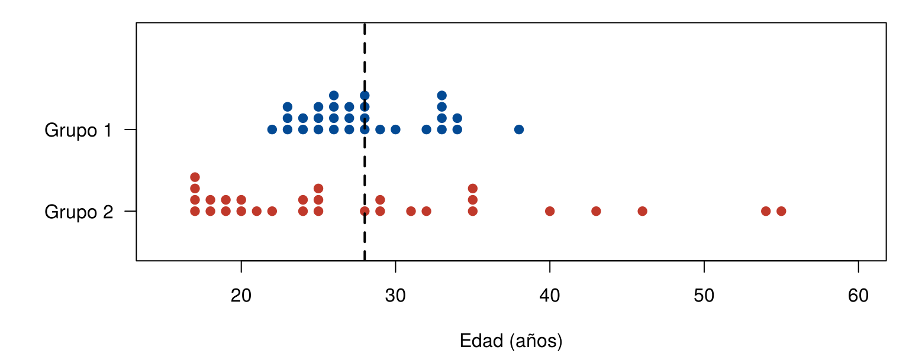
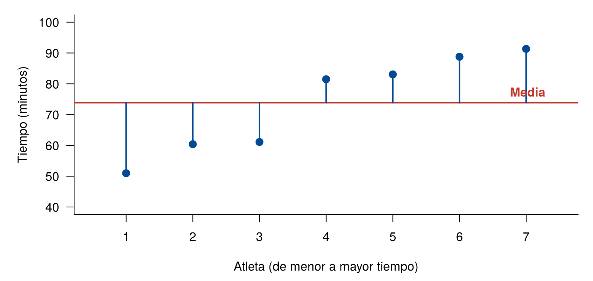
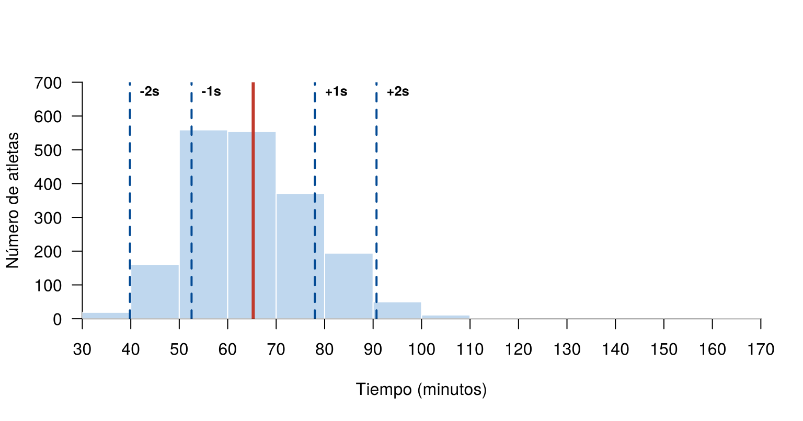

Suponga que dos grupos de participantes, patrocinados por dos empresas, tienen el mismo promedio de edad: 28 años. A primera vista parecen iguales. Sin embargo, la media no indica si las edades están cerca unas de otras o muy separadas.
Los indicadores de dispersión miden qué tan
separados están los datos. Esta página usa estos dos grupos y la base
CarreraLuz22, del paquete paqueteMETODOS. Los
bloques de código se ejecutan en orden, porque algunos usan objetos
creados en bloques anteriores.
grupo1 <- c(27, 27, 28, 28, 34, 28, 26, 33, 24, 28, 25, 25, 33, 27, 34,
38, 24, 26, 22, 23, 33, 23, 26, 26, 32, 33, 29, 30, 25, 23)
grupo2 <- c(35, 25, 19, 17, 24, 17, 55, 25, 31, 35, 43, 28, 32, 19, 20,
17, 25, 18, 21, 22, 17, 35, 29, 20, 54, 46, 24, 29, 40, 18)
c(media_1 = mean(grupo1), media_2 = mean(grupo2))media_1 media_2
28 28 Aunque las dos medias son iguales, la figura muestra que los grupos son distintos:
par(mar = c(4.5, 6, 1, 1))
stripchart(list(`Grupo 1` = grupo1, `Grupo 2` = grupo2), method = "stack", offset = 0.5,
at = c(2, 1), pch = 19, col = c("#034A94", "#C0392B"), las = 1,
xlim = c(15, 60), ylim = c(0.5, 3.2), xlab = "Edad (años)")
abline(v = 28, lty = 2, lwd = 2)
Edades de los dos grupos. La línea vertical indica la media.
El rango es el indicador de dispersión más sencillo: la diferencia entre el valor máximo y el valor mínimo.
\[ r = \max(x) - \min(x) \]
c(rango_1 = diff(range(grupo1)), rango_2 = diff(range(grupo2)))rango_1 rango_2
16 38 El rango muestra que las edades del grupo 2 están más dispersas. Es fácil de calcular, pero solo usa dos datos, así que no refleja lo que ocurre en el resto y se ve muy afectado por los valores atípicos.
Para usar todos los datos, se mide qué tan lejos está cada uno de la media. Esa distancia es la desviación: \(x_i - \bar{x}\). La figura muestra las desviaciones de los tiempos de las 7 mujeres juveniles:
juvenil <- subset(CarreraLuz22, categoria == "1. Juvenil" & sex == "Mujer")
tiempo_juvenil <- sort(round(juvenil$timerun / 60, 2))
media_juvenil <- mean(tiempo_juvenil)
par(mar = c(4.5, 5, 1, 1))
plot(tiempo_juvenil, pch = 19, col = "#034A94", cex = 1.3, las = 1,
xlim = c(0.5, 7.5), ylim = c(40, 100), xlab = "Atleta (de menor a mayor tiempo)",
ylab = "Tiempo (minutos)", bty = "l")
abline(h = media_juvenil, lwd = 2, col = "#C0392B")
segments(1:7, media_juvenil, 1:7, tiempo_juvenil, col = "#034A94", lwd = 2)
text(7.4, media_juvenil + 3, "Media", col = "#C0392B", font = 2, pos = 2)
Desviación de cada dato con respecto a la media.
Las desviaciones no se pueden promediar directamente, porque su suma siempre es cero. Por eso se elevan al cuadrado. La varianza muestral es:
\[ s^2 = \frac{1}{n-1} \sum_{i=1}^{n} (x_i - \bar{x})^2 \]
sum(tiempo_juvenil - media_juvenil) # suma de desviaciones[1] 0sum((tiempo_juvenil - media_juvenil)^2) / (length(tiempo_juvenil) - 1) # aplicando la fórmula[1] 256.4182var(tiempo_juvenil) # con la función[1] 256.4182Como las desviaciones suman cero, al conocer \(n - 1\) de ellas la última queda determinada. Por eso se dice que hay \(n - 1\) grados de libertad. La varianza de una población completa se divide entre \(N\), como se vio en Conceptos básicos.
Fórmula alternativa:
\[ s^2 = \frac{1}{n-1} \left( \sum_{i=1}^{n} x_i^2 - n\bar{x}^2 \right) \]
No es negativa: \(s^2 \geq 0\).
La varianza de una constante es cero: si \(x_i = k\) para todo \(i\), entonces \(s^2 = 0\).
Multiplicar por una constante: si \(y_i = k x_i\), entonces \(s_y^2 = k^2 s_x^2\).
Sumar una constante: si \(y_i = x_i + k\), entonces \(s_y^2 = s_x^2\).
Combinación lineal: si \(z_i = a x_i + b y_i\), entonces:
\[ s_z^2 = a^2 s_x^2 + b^2 s_y^2 + 2ab \, \text{cov}(x, y) \]
donde la covarianza mide la relación lineal entre dos variables:
\[ \text{cov}(x, y) = \frac{1}{n-1} \sum_{i=1}^{n} (x_i - \bar{x})(y_i - \bar{y}) \]
Las propiedades 4 y 5 se pueden comprobar en R:
var(10 * tiempo_juvenil) # propiedad 4[1] 25641.82100 * var(tiempo_juvenil)[1] 25641.82var(tiempo_juvenil + 5) # propiedad 5[1] 256.4182var(tiempo_juvenil)[1] 256.4182La varianza tiene una limitación: sus unidades están al cuadrado, por ejemplo, minutos\(^2\). Esto dificulta su interpretación.
La desviación estándar es la raíz cuadrada de la varianza. Tiene las mismas unidades de los datos:
\[ s = \sqrt{s^2} \]
Indica qué tan alejados están los datos de la media, de forma típica. Una desviación estándar pequeña indica que los datos están cerca de la media, y una grande, que están más dispersos.
c(varianza_1 = var(grupo1), varianza_2 = var(grupo2))varianza_1 varianza_2
16.62069 116.89655 c(desviacion_1 = sd(grupo1), desviacion_2 = sd(grupo2))desviacion_1 desviacion_2
4.076848 10.811871 Las dos medias son de 28 años, pero la desviación estándar es de 4.08 años en el grupo 1 y de 10.81 años en el grupo 2.
Propiedades de la desviación estándar:
Con la media y la desviación estándar se puede saber qué proporción de los datos está cerca de la media. Hay dos reglas:
| Distancia a la media | Regla empírica: datos en forma de campana y simétricos | Regla de Chebyshev: cualquier conjunto de datos |
|---|---|---|
| 1 desviación estándar | Aproximadamente 68 % | No da información |
| 2 desviaciones estándar | Aproximadamente 95 % | Al menos 75 % |
| 3 desviaciones estándar | Más de 99 % | Al menos 89 % |
La regla de Chebyshev viene de esta expresión, para \(k > 1\):
\[ \text{Proporción de datos a menos de } k \text{ desviaciones} \geq 1 - \frac{1}{k^2} \]
En la carrera se puede comprobar qué ocurre:
tiempo <- CarreraLuz22$timerun / 60
media <- mean(tiempo)
desviacion <- sd(tiempo)
100 * mean(abs(tiempo - media) <= 1 * desviacion)[1] 69.14672100 * mean(abs(tiempo - media) <= 2 * desviacion)[1] 96.09781100 * mean(abs(tiempo - media) <= 3 * desviacion)[1] 99.68783cortes <- seq(30, 170, by = 10)
limites <- media + c(-2, -1, 1, 2) * desviacion
hist(tiempo, breaks = cortes, col = "#BFD7EE", border = "white", las = 1,
xlim = range(cortes), ylim = c(0, 700), xaxp = c(30, 170, 14),
xaxs = "i", yaxs = "i", main = "",
xlab = "Tiempo (minutos)", ylab = "Número de atletas")
abline(v = media, col = "#C0392B", lwd = 3)
abline(v = limites, col = "#034A94", lwd = 2, lty = 2)
text(limites, 670, c("-2s", "-1s", "+1s", "+2s"), pos = 4, cex = 0.8, font = 2)
Tiempos de la carrera, con la media y una y dos desviaciones estándar a cada lado.
La varianza y la desviación estándar se calculan con la media, por lo que un dato extremo las afecta. Hay dos indicadores que se ven menos afectados.
| Indicador | Fórmula | En R |
|---|---|---|
| Rango intercuartílico (RIC) | \(RIC = Q_3 - Q_1\) | IQR(x) |
| Desviación absoluta mediana (MAD) | \(MAD = \text{mediana}(\lvert x_i - Me \rvert)\) | mad(x, constant = 1) |
El RIC mide el ancho del 50 % central de los datos. La MAD es la mediana de las distancias a la mediana.
Por defecto, mad() multiplica el resultado por 1.4826.
Ese ajuste se usa para compararla con la desviación estándar en datos
con distribución normal. Con constant = 1 se obtiene la
fórmula anterior.
En la carrera, si se quita el mayor tiempo, la desviación estándar cambia más que el RIC y la MAD:
sin_maximo <- tiempo[tiempo < max(tiempo)]
c(todos = sd(tiempo), sin_maximo = sd(sin_maximo)) # desviación estándar todos sin_maximo
12.72077 12.51442 c(todos = IQR(tiempo), sin_maximo = IQR(sin_maximo)) # rango intercuartílico todos sin_maximo
16.90833 16.90000 c(todos = mad(tiempo), sin_maximo = mad(sin_maximo)) # MAD ajustada todos sin_maximo
12.05848 12.03377 Para comparar la dispersión de grupos con medias distintas, o de variables con unidades distintas, se usa el coeficiente de variación. Expresa la desviación estándar como un porcentaje de la media:
\[ CV = \frac{s}{|\bar{x}|} \times 100 \% \]
No tiene unidades. Tiene sentido en variables de razón con media positiva, como el tiempo o el peso. No se usa con temperaturas en °C, porque su cero es una convención.
Por ejemplo, la edad y el tiempo se miden en unidades distintas, pero su dispersión relativa se puede comparar:
cv <- function(x) 100 * sd(x) / mean(x)
c(edad = cv(CarreraLuz22$edad), tiempo = cv(tiempo)) edad tiempo
29.09796 19.49164 La edad tiene una mayor dispersión relativa que el tiempo.
Una guía usada para interpretarlo es la siguiente. Los cortes dependen del área y del contexto:
| \(CV\) | Variabilidad | Grupo de datos |
|---|---|---|
| \(CV \leq 10 \%\) | Muy baja | Muy homogéneo |
| \(10 \% < CV \leq 20 \%\) | Baja | Homogéneo |
| \(20 \% < CV \leq 30 \%\) | Moderada | Moderadamente heterogéneo |
| \(30 \% < CV \leq 40 \%\) | Alta | Heterogéneo |
| \(CV > 40 \%\) | Muy alta | Muy heterogéneo |
Para los dos grupos de edades:
c(cv_1 = cv(grupo1), cv_2 = cv(grupo2)) cv_1 cv_2
14.56017 38.61382 El grupo 1 tiene baja variabilidad y el grupo 2, alta.
| Ámbito | Publicación | Indicador | Uso |
|---|---|---|---|
| Educación | Icfes, Saber 11, 2023 | Desviación estándar | En el calendario A, el puntaje global tuvo promedio de 257 y desviación estándar de 51 |
| Investigación clínica | Guan et al. (2020), reseñado por Eastin y Eastin | Rango intercuartílico | La edad se reporta con mediana de 47 años, y sus cuartiles 35 y 58 |
| Artículos biomédicos | Guías SAMPL | Desviación estándar | Recomiendan describir los datos aproximadamente normales con media (desviación estándar) |
| Situación | Indicador |
|---|---|
| Una descripción rápida de la amplitud | Rango, con mínimo y máximo |
| Datos sin asimetría marcada | Desviación estándar, junto con la media |
| Datos asimétricos o con datos atípicos | Rango intercuartílico, junto con la mediana |
| Comparar grupos con medias o unidades distintas | Coeficiente de variación |
| Problema | Causa | Solución |
|---|---|---|
sd() o var() da
NA |
Hay datos faltantes | Usar na.rm = TRUE |
| Decir que la desviación estándar es el promedio de las desviaciones | Ese promedio siempre es cero | Explicarla como una distancia típica a la media |
| Interpretar la varianza en las unidades de los datos | Sus unidades están al cuadrado | Usar la desviación estándar |
| Aplicar la regla empírica a datos muy asimétricos | Solo vale para distribuciones de campana | Usar la regla de Chebyshev o revisar los datos |
| Usar el CV con una media cercana a cero o con valores negativos | La razón pierde sentido | Usar otro indicador |
mad(x) no coincide con el cálculo a
mano |
mad() multiplica por 1.4826 |
Usar constant = 1 |
Calcule la media, la varianza y la desviación estándar de 2, 4, 4 y 6. Compruebe el resultado en R.
La media es 4. Las desviaciones son -2, 0, 0 y 2, y sus cuadrados suman 8. Entonces, \(s^2 = 8/3 = 2.67\) y \(s = 1.63\).
x <- c(2, 4, 4, 6)
c(media = mean(x), varianza = var(x), desviacion = sd(x)) media varianza desviacion
4.000000 2.666667 1.632993 Calcule la desviación estándar y el coeficiente de variación del tiempo para hombres y mujeres. ¿Qué grupo tiene mayor dispersión relativa?
tapply(tiempo, CarreraLuz22$sex, sd) Hombre Mujer
12.25425 11.74628 tapply(tiempo, CarreraLuz22$sex, cv) Hombre Mujer
19.75193 16.69355 Los hombres tienen mayor dispersión relativa.
Los tiempos en minutos tienen una desviación estándar de 12.72. Sin usar los datos, ¿cuál es la desviación estándar en segundos? ¿Cambia el coeficiente de variación?
La desviación estándar se multiplica por 60. El coeficiente de variación no cambia, porque la media también se multiplica por 60.
c(minutos = sd(tiempo), segundos = sd(60 * tiempo)) minutos segundos
12.72077 763.24650 c(minutos = cv(tiempo), segundos = cv(60 * tiempo)) minutos segundos
19.49164 19.49164 Se suman 0.5 puntos a todas las notas de un grupo. ¿Qué ocurre con la media, con la desviación estándar y con el coeficiente de variación? Compruébelo con 3, 3.5, 4 y 4.5.
La media aumenta 0.5 y la desviación estándar no cambia. Por eso, el coeficiente de variación disminuye.
notas <- c(3, 3.5, 4, 4.5)
c(media = mean(notas), desviacion = sd(notas), cv = cv(notas)) media desviacion cv
3.7500000 0.6454972 17.2132593 c(media = mean(notas + 0.5), desviacion = sd(notas + 0.5), cv = cv(notas + 0.5)) media desviacion cv
4.2500000 0.6454972 15.1881700 Sin mirar la forma de los datos, ¿qué porcentaje mínimo debe estar a menos de 2 desviaciones estándar de la media? ¿Se cumple en la edad de los atletas?
Debe ser al menos \(1 - 1/2^2 = 75 \%\).
edad <- CarreraLuz22$edad
100 * mean(abs(edad - mean(edad)) <= 2 * sd(edad))[1] 96.09781Se cumple.
mad().Última revisión: 5 de noviembre de 2026.